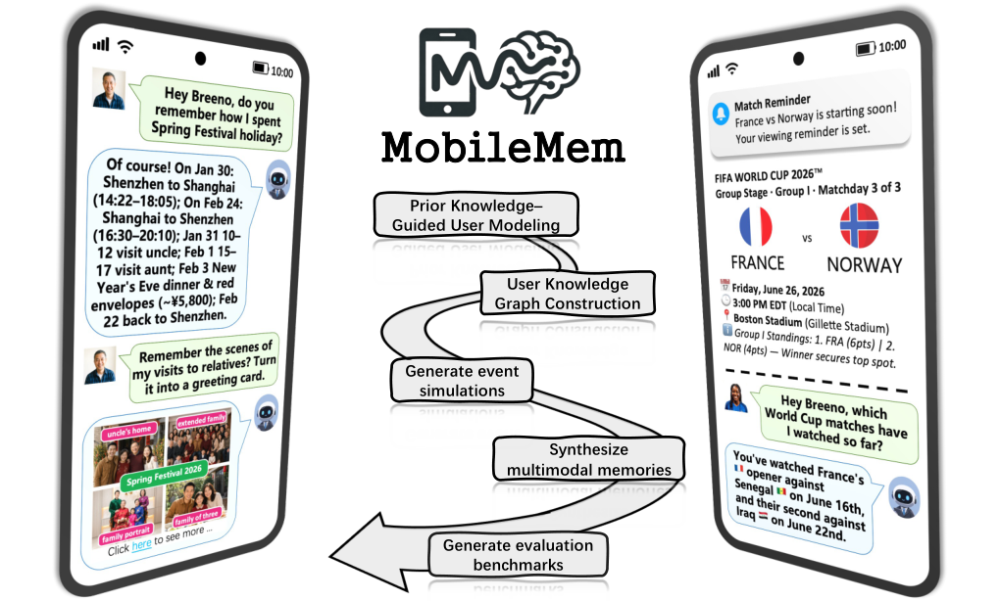
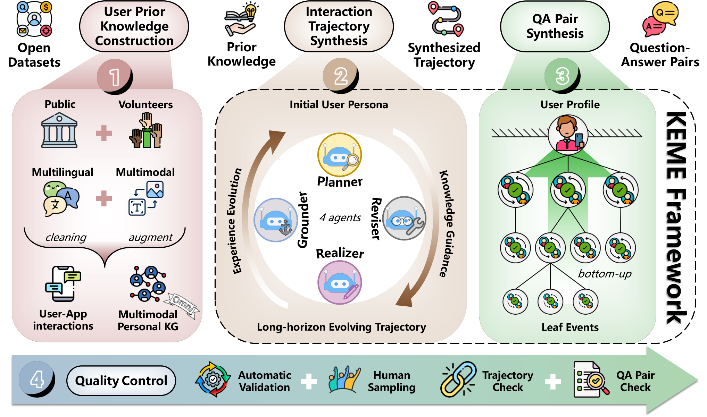

MobileMem: Learning from a Year of Mobile Experiences
TL;DR
- "MobileMem: Learning from a Year of Mobile Experiences" (arXiv 2608.13606; Xinle Deng, Yida Xue, Xiangyuan Ru, et al., with Huajun Chen and Ningyu Zhang — OPPO + OpenKG/ZJUNLP) is a benchmark + synthesis framework for on-device long-term memory: instead of reducing a user to a sequence of chats, it models a year of heterogeneous mobile experiences — notes, bills, calendars, to-dos, voice memos, screenshots — as an evolving event stream a memory layer must organize, update, retrieve, and reason over.
- The engine is KEME, a knowledge-guided synthesis pipeline: four agents (planner, anchor grounder, realizer, reviser) alternate top-down recursive temporal-event-graph planning with bottom-up experience-driven revision, grounding real user-app sessions as immutable knowledge anchors and evolving a versioned, evidence-linked persona. Two tracks result: a text track (apps push structured events to the assistant) and MobileMem-Omni (multimodal: 16 users, avg 1.72M tokens/user, 19,060 images, 7,415 QA pairs across 7 question types, bilingual EN/ZH).
- Headline findings are negative in the useful way: the best system (EverMemOS) scores only 39.4% LLM-Judge on Omni; abstention is under 20% for most systems because stronger retrievers surface weakly-related evidence and get more confidently wrong on unanswerable questions; converting images to captions helps visual reasoning (+3.50%) but hurts everything else (−4.43%) via memory interference; and KEME-synthesized distractors degrade retrieval more than simply lengthening trajectories.
Why this matters
Every memory benchmark this tracker has covered — LongMemEval-style conversation streams, LoCoMo descendants — shares an assumption MobileMem attacks head-on: that a user's history is a dialogue log. Real personal context lives in calendars, bills, notes, screenshots, and app records; it is multimodal, cross-app, temporally evolving, and mostly not addressed to the assistant. If the endgame for personal agents is on-device (privacy, latency, the phone as the natural aggregation point), then memory systems face constraints cloud RAG papers never price in: millions of tokens of distractors, storage/compute budgets, stale facts that must be overwritten, and the need to refuse when evidence is absent.
Two framing moves are worth stealing regardless of the benchmark. First, the two-layer memory ecosystem: a system-level memory layer as a blackboard, with application-specific memories as knowledge sources doing cognitive offloading — a browser's history search and a finance app's monthly aggregates already are memory systems with retrieval and consolidation, so the assistant should query them through a protocol rather than re-parse pixels (a direct critique of screenshot-everything approaches like MineContext). Second, the diagnosis that memory systems "must do more than store additional information": the measured bottlenecks are updating, interference-resistance, temporal reasoning, and knowing when not to answer — not raw recall.
The core idea
Formally, each benchmark instance is a pair
where \(\mathcal{T}\) is an interaction trajectory of sessions of heterogeneous actions (utterances, app operations, notifications, screenshots) and each question \(q_j\) has gold answer set \(\mathcal{A}_j\). Flattening sessions chronologically into \(\tau = \operatorname{Flatten}(\mathcal{T}) = \{x_i\}_{i=1}^{|\tau|}\), the memory layer under test consumes the stream online:
where \(\mathcal{M}_t\) is the memory state after ingesting action \(x_t\); answers are generated from the final state \(\mathcal{M}_{|\tau|}\) and scored end-to-end by an LLM judge. The evaluation therefore stresses the whole construct–organize–retrieve–reason pipeline, not retrieval in isolation.

Figure 1 from the paper: the MobileMem overview — heterogeneous, multimodal, evolving mobile experiences feeding an on-device memory layer evaluated across reasoning categories.The hard part is getting year-scale, temporally coherent, personal data without violating privacy. KEME's answer: collect real priors that are safe (interview-derived user profiles; app-usage metadata from volunteers' OPPO phones — explicitly no raw content), treat already-existing sessions as immutable knowledge anchors, and synthesize everything else under those constraints. Trajectories aren't statically assembled; they're incrementally expanded so that later experiences are conditioned on earlier ones — which is what makes knowledge-update and temporal questions well-posed.
How it works

Figure 4 from the paper: the KEME data-synthesis framework — prior-knowledge construction, top-down planning with bottom-up revision, QA pair synthesis, and quality control across the pipeline.KEME runs as a two-stage pipeline: from initial persona \(\mathcal{P}_{\mathrm{start}}\), anchors \(\mathcal{K}\), and horizon \([T_{\mathrm{start}}, T_{\mathrm{end}}]\), synthesize trajectory \(\mathcal{T}\); then derive \(\mathcal{Q}\) from \(\mathcal{T}\), a question taxonomy \(\mathcal{B}\), and the final profile \(\mathcal{P}_{\mathrm{end}}\). Four agents implement it:
KEME(P_start, anchors K, horizon [T_start, T_end]):
G(root) ← A_plan: partition horizon into coarse life events # temporal event graph
frontier ← {root}
while frontier nonempty: # top-down knowledge guidance
u ← next node in topological order
if u carries anchors K(u):
A_ground: assign each anchored session to an event whose
time interval contains it; revise G(u) until all groundable;
summarize grounded content → compatibility context
(propagated to descendants as a non-contradiction constraint)
for event n in G(u):
if depth(n) = d_max and few grounded sessions:
S(n) ← A_realize: synthesize the concrete session
- anchored content adopted verbatim (immutability)
- else human-assistant dialogue consistent w/ constraints
- link messages to persona attributes (evidence-grounded
reveal); log attribute updates if state genuinely changed
else: expand n into finer sub-event graph G(n)
A_revise: update remaining UNEXPANDED events/edges to reflect
outcomes just realized # bottom-up experience evolution
QA synthesis: traverse the tree leaves → root with taxonomy B;
leaves yield grounded single-hop pairs; internal nodes compose
child pairs into multi-hop/temporal questions; propagate 10 unused
child pairs upward; taxonomy may grow
Quality control: manual segment inspection, LLM evidence-sufficiency
checks, dedup; (Omni) MLLM image checks + InsightFace identity match
The persona is a set of dimension-wise attributes with version histories and message-level evidence links — attributes start "unrevealed" and only become revealed when a synthesized message links to them, and updates are recorded with operation logs. That bookkeeping is what lets QA synthesis generate answerable knowledge-update questions and verifiable abstention cases.
Text track (MobileMem). Seven app types (Bill, Voice Recorder, Screen Memo, Document, Note, Calendar, To-Do List) each fill a message template ("The user creates a note '[Title]' Content: [Content]") and forward structured events to the memory layer. Synthesis backbone GPT-5.2, expansion depth 2, 2–15 events per graph.
Multimodal track (MobileMem-Omni). 16 users (8 interviewed volunteers + 8 LLM-generated profiles; 8 English, 8 Chinese), each with a personal relationship graph whose members get generated portraits. Visual memory points become images via three routes: HTML templates rendered into app screenshots, portrait-conditioned photo synthesis, and direct text-to-image (Seedream primary). Scale: 1,589 events, avg 202.6 sessions and 1.72M tokens per user, 155,670 dialogue turns, 19,060 images, 7,415 QA pairs across seven categories (single-hop, multi-hop, knowledge update, temporal, implicit preference, abstention, visual — roughly 770–1,230 each). Trajectories exceeding two million tokens forced dropping the bottom-up revision loop for Omni; persona evolution there is only implicit via conditioning on preceding events.
Results
- Text track (Table 1, judge = Qwen3.5-397B-A17B): A-MEM (79.68 overall, GPT-4.1-mini) and HippoRAG2 (80.06, GPT-5.4-mini) lead — both preserve raw conversational information rather than aggressively compressing or overwriting, and both add retrieval structure (A-MEM's metadata, HippoRAG2's entity graph + personalized PageRank) that survives distractors. NaiveRAG collapses to ~37 despite also keeping raw text — recall of the target memory, not storage, is the differentiator. Mem0 lands at 35–43 (its extraction prompt focuses on user messages and misses app/assistant events); LangMem is worst overall (24.79) yet best on adversarial/unanswerable questions (76.42) — the paper's cleanest evidence that stronger retrieval makes systems more confidently wrong when no answer exists.
- Construction cost matters on-device: A-MEM burns 5.5M–11.2M tokens per user trajectory to build memory; EverMemOS 7.6M–11.2M. Long Context degrades when the backbone's window shrinks (GPT-5.4-mini's 400K vs GPT-4.1-mini's 1M: 54.51 → 45.19 overall).
- Omni track (judge = Qwen3-14B, 80.7% human agreement): everything is hard. Best is EverMemOS + GPT-5.4-mini at 39.41 LLM-Judge; abstention is below 20% for most systems; multimodal long context beats caption-based long context on visual reasoning (21.9 vs 12.16) but captions interfere elsewhere — the +3.50%/−4.43% visual-vs-other trade-off from the thread matches Figure 8's NaiveRAG analysis. Chinese questions score consistently below English across all methods; short-term events are hardest.
- KEME as an adversarial tool: rebuilding 10 LongMemEval questions' surrounding context with KEME (answers preserved, verified manually) drops NaiveRAG from 40% → 20% at top-5 and EverMemOS from 90% → 80%, while producing shorter trajectories — semantically-similar distractors push answer-bearing evidence down the retrieval ranking (normalized rank +10.63pp). Well-designed distractors beat trajectory length as a difficulty axis.
How it connects
- Agentic Context Management (this list): ACM's lifecycle primitives — scoping, anticipating, compacting-with-consolidation — are exactly the operations MobileMem's failure taxonomy implicates: Long Context fails on memory update (13/20 errors), EverMemOS on answer generation after retrieval interference. MobileMem is the year-scale eval that would pressure-test ACM's compaction decisions.
- MSCE: Converting Agent Memory into Executable Skills (this list): MSCE's bet is that memory should be distilled into procedures, not accumulated as retrievable text. MobileMem's finding that caption-augmented stores create interference, and that preserving-everything systems (A-MEM) win only via better indexing, supports the thesis that raw accumulation has a ceiling — though MobileMem's preference/temporal questions would stress skill-style consolidation hard.
- Memory Decoder (this list): the swappable parametric-memory direction is one answer to MobileMem's on-device cost problem (Figure 7: existing memory methods are "slow and resource-intensive, hence unsuitable for on-device scenarios"; A-MEM's 11M construction tokens). A pretrained per-user memory decoder is the opposite pole from EverMemOS-style pipelines on the token-budget axis.
- Survey: Continual Learning in Transition (tracked, no tutorial): the survey's arc — from task-incremental CL to experience-stream learning — is precisely what MobileMem operationalizes as an eval: knowledge updates without catastrophic forgetting, evolving preferences, distractor-heavy streams.
- Macaron-V1 (this list): the natural system-side counterpart — open continual learning via self-improvement and mixture-of-LoRA over a personal assistant. Macaron learns into weights per user; MobileMem measures whether any memory substrate actually tracks a user over a year. Running Macaron-style per-user adapters against MobileMem-Omni is the obvious experiment neither paper does.
Critical take
The benchmark is synthetic in the place it most claims realism. Real data enters only as interview profiles and app-usage metadata; every session, note, bill, and screenshot is LLM-generated (GPT-5.1/5.2) or template-rendered, so "a year of mobile experiences" is really a year-shaped simulation grounded in real scaffolding. That's a defensible privacy trade-off, but it risks circularity: GPT-family judges scoring GPT-family-generated evidence, and distractors hard for embedding retrievers precisely because the same model family wrote them. Quality control leans on "manual inspection revealed no salient inconsistencies" without inter-annotator numbers, and the Omni judge's 80.7% human agreement is mediocre for headline scores sitting in the 20–40% band — a chunk of the reported spread is judge noise. Multi-hop questions are admittedly sometimes compositional stitches of independently answerable hops. And the two-layer memory-ecosystem architecture of Sections 2.2–2.3 is a vision statement — the benchmark instantiates only two simplified corners (template push events; user-shared screenshots), so app-as-memory-system collaboration remains untested design fiction. None of this dulls the useful contributions: KEME's anchor-grounded synthesis is reusable beyond this benchmark (the LongMemEval-hardening study is the proof), and the abstention/interference findings are measured across enough systems to stand as a field-level diagnosis rather than a cherry-pick.
If you remember three things
- Memory ≠ retrieval: the systems that win preserve raw experience but index it better (A-MEM metadata, HippoRAG2 graphs); the field-level bottlenecks are updating stale knowledge, resisting interference, temporal reasoning, and abstaining — stronger retrieval actively hurts abstention.
- KEME's anchor-grounded synthesis — recursive temporal event graphs, immutable real-session anchors, versioned evidence-linked personas, bottom-up revision — is a general recipe for turning fragmented real data into coherent long-horizon eval trajectories, and doubles as a distractor generator that beats length as a difficulty knob.
- On-device is the forcing function: 1.72M tokens per user with construction pipelines costing up to 11M tokens makes cloud-style memory middleware a non-starter on phones; the benchmark's real message is that the next memory system must be cheap, updatable, and calibrated, not just bigger.